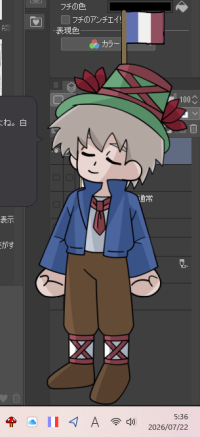

t0-ma作・伺か特設コンテンツ : きのこスキン「フランス国旗」

ClearBrain Systems内「きのこ」（Internet Archive 2004.9.21）用のスキン。
ほぼ幣ゴースト「レミ一座」専用です（トークあります）
2026.7.22：国旗の方向を直して再公開。

ClearBrain Systems内「きのこ」（Internet Archive 2004.9.21）用のスキン。
ほぼ幣ゴースト「レミ一座」専用です（トークあります）
2026.7.22：国旗の方向を直して再公開。